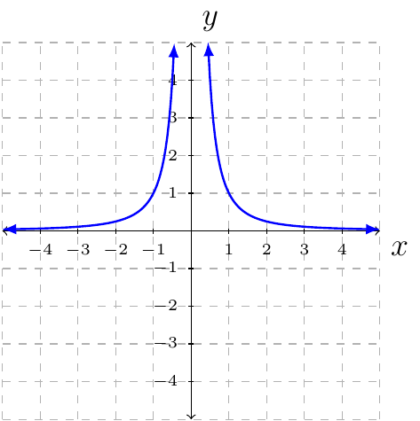

Section 3.5
Definition 41 (Rational Function)
Let \(p(x)\) and \(q(x)\) be any polynomial function where \(q(x)\) is not the zero function. A rational function is
The domain of \(f\) is the set of all \(x\) such that \(q(x)\ne0\).
When finding the domain of a rational function immediately solve \(q(x)=0\). Do not simplify \(f\) and then set the denominator equal to zero.
If \(f(x)=\frac{p(x)}{q(x)}\), then the list of possible zeros for \(f(x)\) is the zeros for \(p(x)\).
Property 6 (Graph of \(f(x)=\frac{1}{x}\).)
The graph of \(f(x)=\frac{1}{x}\) is:

The domain of \(f\) is the set of all \(x\) such that \(x\ne0\).
The range of \(f\) is the set of all \(y\) such that \(y\ne0\).
The function is continuous for all \(x\), not zero.
The function is decreasing in its domain.
The function has a vertical asymptote \(x=0\).
The function has a horizontal asymptote \(y=0\).
Property 7 (Graph of \(f(x)=\frac{1}{x^2}\).)
The graph of \(f(x)=\frac{1}{x^2}\) is:

The domain \(f\) is the set of all \(x\) such that \(x\ne0\).
The range of \(f\) is the set of all \(y\) such that \(y\ne0\).
The function is continuous for all \(x\), not zero.
The function is increasing on the open interval \((-\infty,0)\).
The function is decreasing on the open interval \((0,\infty)\).
The function has a vertical asymptote \(x=0\).
The function has a horizontal asymptote \(y=0\).
Definition 42 (Vertical/Horizontal Asymptote)
Let \(f(x)\) be a rational function.
If the size of \(f(x)\) approaches infinity as \(x\) approaches a fixed number (say \(a\)). Then we say \(f\) has a vertical asymptote at \(x=a\).
If \(f(x)\) approaches a number \(L\) as \(x\) approaches infinity. Then \(f\) has a horizontal asymptote at \(y=L\).
If \(f(x)\) approaches a number \(M\) as \(x\) approaches negative infinity. The \(f\) has a horizontal asymptote at \(y=M\).
When finding the domain of a rational function do not simplify. When finding vertical or horizontal asymptote(s) first simplify.
Important facts when dealing with a horizontal asymptote. The function \(\frac{1}{x}\) approaches zero when \(x\) approaches \(\infty\).
Example 62
Let \(f(x)=\frac{x+1}{(2x-1)(x+3)}\).
Find the domain of the function.
Solution:
Immediately setting the denominator equal to zero we say \(x\) cannot be \(\frac{1}{2}\) or \(-3\). Therefore, the domain of \(f\) is the set of all \(x\) such that \(x\ne\frac{1}{2}\) or \(x\ne-3\) (interval notation would be \((-\infty,-3)\cup(-3,\frac{1}{2})\cup(\frac{1}{2},\infty)\).
Find the vertical asymptote.
Solution:
Since \(f\) is already simplified and the denominator is zero when \(x\) is \(\frac{1}{2}\) or \(-3\) we say \(f\) has vertical asymptote \(y=\frac{1}{2}\) and \(y=-3\).
Find the horizontal asymptote.
Solution:
First, we will write the function in the following way:
Next, we divide the top and bottom by \(x^2\).
Therefore, the function has a horizontal asymptote \(x=0\).
Example 63
Let \(f(x)=\frac{2x+1}{x-3}\). Find horizontal and vertical asymptotes.
Horizontal Asymptote:
Solution:
First, divide the top and bottom by \(x\).
\begin{align*) \frac{2x+1}{x-3} & = \frac{2+\frac{1}{x}}{1-\frac{3}{x}}\ & \to \frac{2+0}{1-0} = 2 \end{align*}
As \(x\to0\) we see that \(f(x)\to0\). Therefore, \(f\) has horizontal asymptote \(y=2\).
Vertical Asymptote:
Solution:
Since \(f\) is fully simplified and \(x-3=0\) when \(x=3\) we say the line \(x=3\) is a vertical asymptote.
Example 64
Let \(f(x)=\frac{x^2+x-6}{x^2-x-12}\). Find horizontal and vertical asymptotes.
Before moving forwards, we should first simplify \(f\).
Solution:
Horizontal asymptote:
Solution:
First, we will divide the top and bottom by \(x\).
That is, \(f\to 1\) as \(x\to \infty\). Therefore, \(f\) has a horizontal asymptote \(y=1\).
Vertical asymptote:
Solution:
Since \(f\) simplified is \(\frac{x-2}{x-4}\) and \(x-4=0\) whenever \(x=4\); we say, \(x=4\) is a vertical asymptote.
In the last example it is important to note that \(f(x)\ne\frac{x-2}{x-4}\) and \(f(-3)\) is undefined (point-wise). If you graph \(y=\frac{x^2+x-6}{x^2-x-12}\) and \(y=\frac{x-2}{x-4}\) you will think they are the same; however, they are not. The graph \(y=\frac{x^2+x-6}{x^2-x-12}\) will have a hole when \(x=-3\). The graph \(y=\frac{x-2}{x-4}\) will not have a hole when \(x=-3\).
Example 65
Find the oblique asymptote for the function \(f(x)=\frac{x^2+1}{x-2}\).
Solution:
After polynomial long division we have:
Therefore, the oblique asymptote is \(y=x+2\). That is, the graph \(y=\frac{x^2+1}{x-2}\) will always approach the line \(y=x+2\) but never touch it.